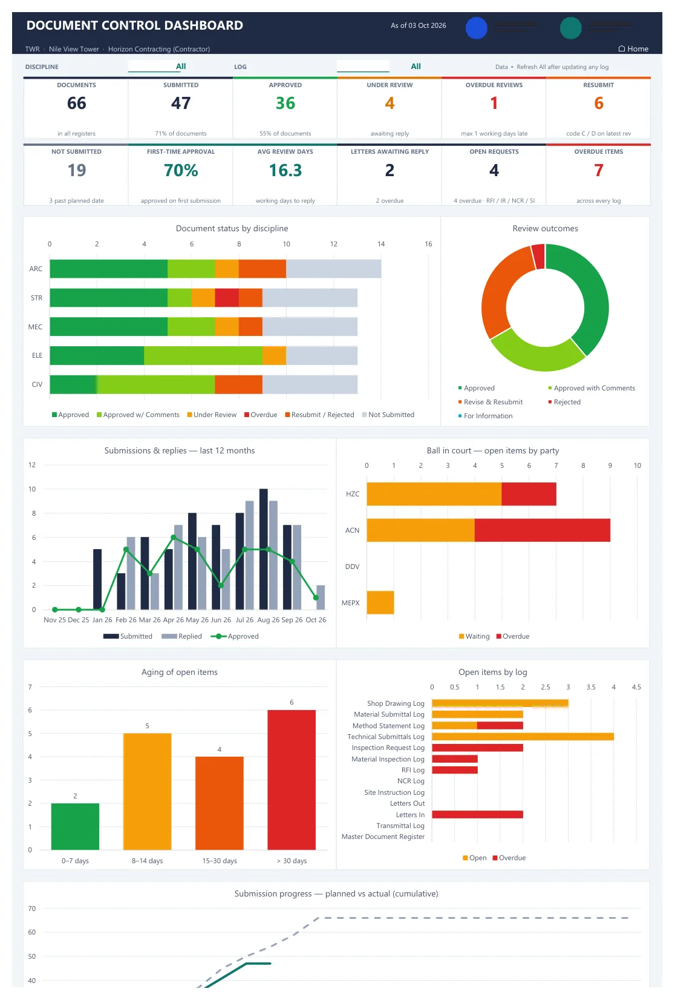
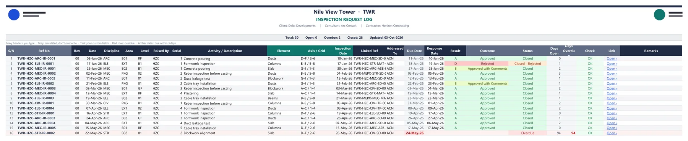
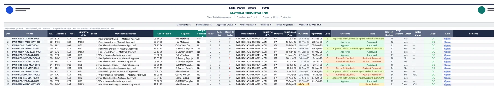
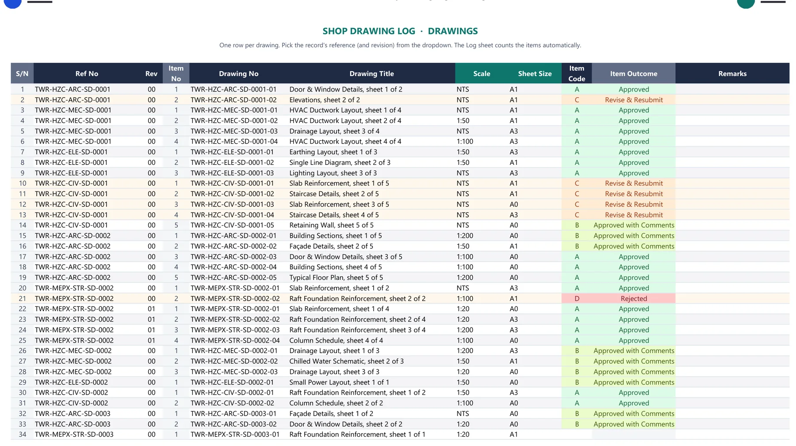
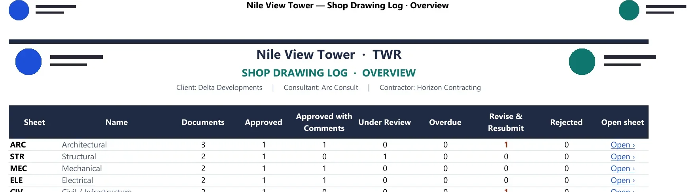
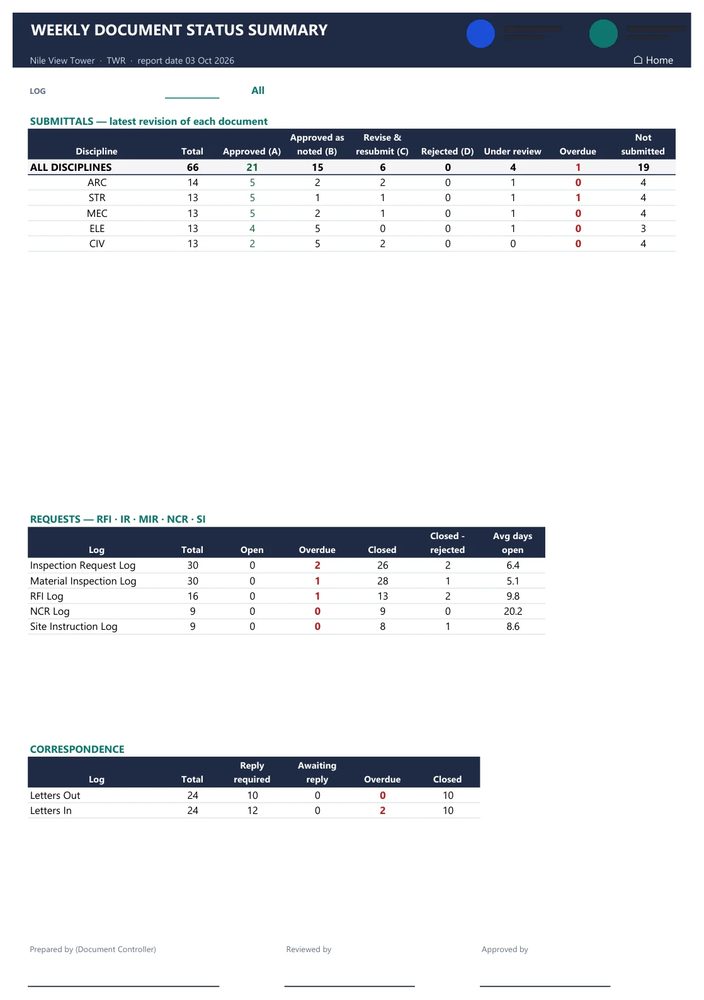
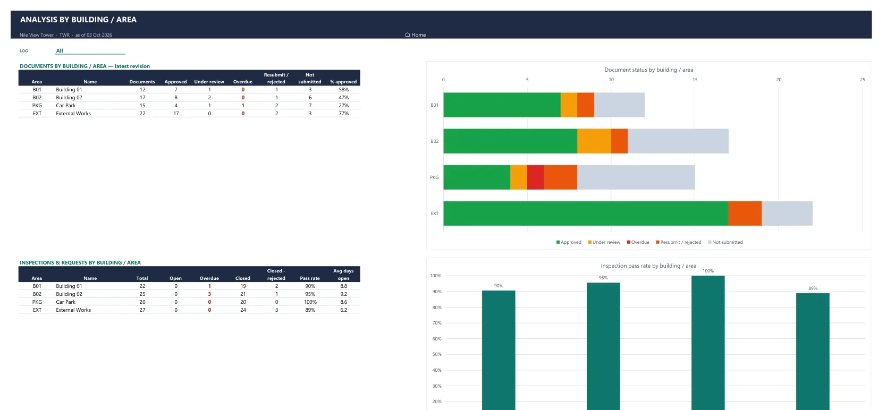
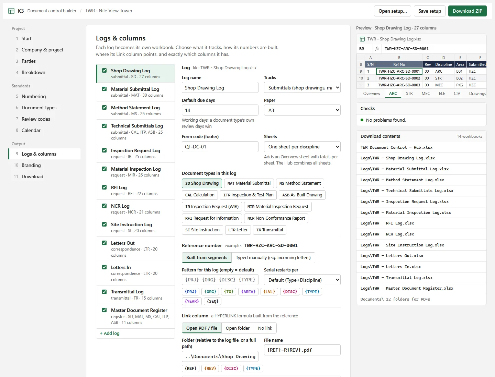

For document controllers on construction projects
Document control logs, ready in Excel.
Set up your project once: parties, numbering, document types, review codes, columns and logos. K3 gives you a complete system: one workbook per log, plus a hub with a live dashboard and weekly reports.
- Free while in beta
- No macros
- Runs in your browser
- Your data stays on your computer


A real log generated by K3 (sample project). The reference numbers, due dates, status, colours and file links are all formulas. You only type the facts.
Everything a document controller tracks, already built.
Pick the logs you keep. Each one is its own light workbook with the columns you choose. The hub reads them all with Power Query.
Logs that think like a DC.
Reference numbers build themselves from your pattern. The Check column suggests the next free serial and catches duplicates before they reach the consultant.
- Due dates in working days, with your weekend and holidays
- Codes A / B / C / D coloured; overdue rows in red
- Latest revision, ball in court, days overdue: automatic
- One click opens each document's PDF or folder

Many drawings in one submittal. Many materials in one MIR.
Records can hold a list of items on their own sheet, each with its own code. The log counts how many items were approved and how many need revising.
- Drawings, products, materials or transmitted documents
- Your own item columns: scale, sheet size, quantity, unit
- Every item searchable from the hub

A sheet per discipline, if that's how you work.
Keep one sheet for everything, or split any log by discipline, document type or building. An overview sheet totals them, and the hub still reads them as one.

The weekly report writes itself.
Refresh the hub and the summary is ready to print: disciplines against your review codes, open requests, letters waiting for a reply, with signature lines.
- Chase list per party, sorted by days overdue
- Document status register across every log
- File audit: which records have no PDF yet

See where the problems are, building by building.
Document status and inspection pass rate per area, plus heat maps of discipline against building for documents, open items and failed inspections.

From empty folder to working system in about ten minutes.
- Pick a templateContractor, consultant, client / PMC, subcontractor, ISO 19650, or blank.
- Make it yoursParties, numbering, codes, calendar, logs, columns, colours and logos. A live preview shows each log.
- Download one ZIPUnzip it on your drive, server or synced SharePoint folder. Folders for your PDFs are already there.
- Work and refreshEnter data in the logs. Open the hub, click Refresh All, print the weekly report.

Questions
Which Excel do I need?
Excel 2021 or Microsoft 365 on Windows or Mac. K3 uses modern functions such as XLOOKUP and Power Query, which older versions don't have.
Are there macros?
No. Every file is a plain .xlsx, so it passes company IT security and opens without warnings about VBA.
Where is my project data stored?
Only on your computer. The builder runs entirely in your browser; nothing you type is uploaded. The files are created on your machine and saved where you choose.
Can I change things after I start?
Yes. Each workbook has a Lists sheet with every dropdown, code and holiday. Add a discipline or party there and the log updates. Save your setup as a file to reuse it on the next project.
Does it work on SharePoint or OneDrive?
The logs and file links work in synced folders. If the hub can't find the logs when opened from a web address, type the local folder path once in the hub's Lists sheet.
How much does it cost?
K3 is free while in beta. We want feedback from working document controllers before anything else.
Arabic headers?
Every column header can be renamed today. Built-in Arabic and bilingual layouts are on the roadmap.
Can my whole company use one standard?
Save your configured setup as a .json file and share it. Everyone who opens it starts from the same numbering, codes, logs and logos.
Built by a document controller, for document controllers.
Tell us what your logs need, what's missing, and what slowed you down. Every message is read.